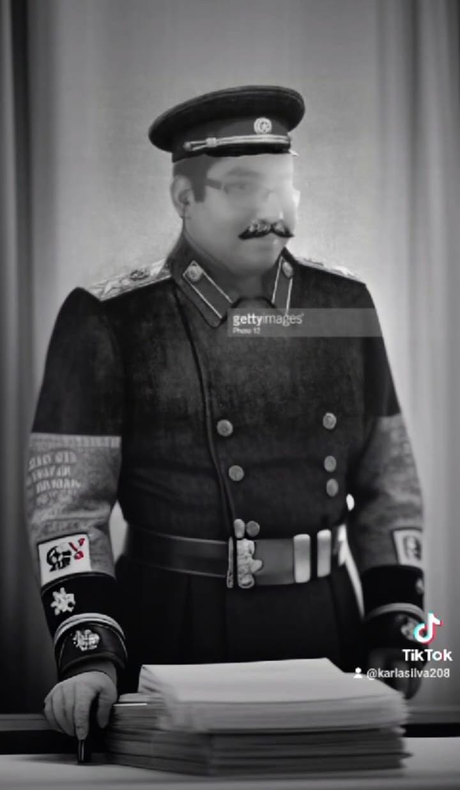

Películas que te recomendamos
Ver más >
×

Información del Autor
Nombre:
Fabián Rodríguez Angeles
Contacto:
4428248878
fabian.angeles01234@gmaul.com
Sobre mí
Estudiante de la universidad autonoma de Quéretaro
Cerrar
Títulos Originales de la Comunicación
Introducción
La comunicación es fundamental para el desarrollo humano
Selecciones de novedades con suscripciones
Comunicación
la comunicación se ha convertido en un tema crucial en todos los ámbitos
Proceso Comunicativo
Proceso de transmitir ideas, emociones y habilidades a través de símbolos, palabras e imágenes.
Tipos de Comunicación
comunicación es la transferencia y comprensión del signifi cado.
Barreras Comunicativas
La comunicación ayudo a la creacion de cultura que se trasmite de una generacion a otra
Comunicación Efectiva
La comunicación ha sido un tema de interés para la humanidad en los ámbitos social, laboral, familiar e interpersonal.
Ética en la Comunicación
La comunicación es la transmisión y recepción de pensamientos, hechos, creencias, actitudes y sentimientos.
Técnicas de Comunicación
La comunicación es una habilidad fundamental en cualquier actividad humana
×
Reproducir